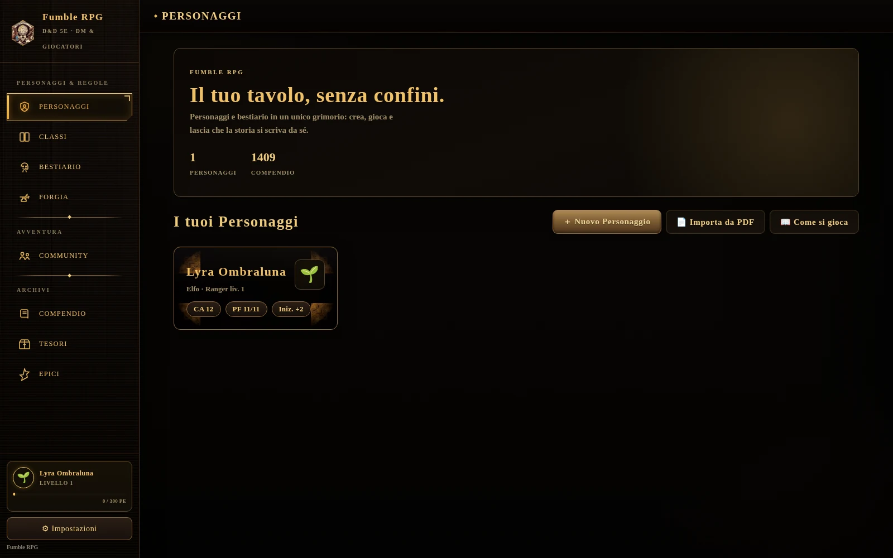

Fumble RPG
Fumble RPG
Tutto quello che ti serve per la tua campagna
Fumble RPG è il compagno digitale per D&D 5ª edizione 2024: schede personaggio, dadi, bestiario, classi e compendio delle regole, sempre con te su Windows e macOS, e utilizzabile anche da telefono e tablet direttamente dal browser.

Le funzionalità
Quattro strumenti veri, sempre sincronizzati e sempre aggiornati: bestiario, classi, livelli epici e compendio delle regole.
Bestiario
960 mostri, filtrabili per tipo, taglia, grado di sfida e origine: ufficiali e homebrew, sempre pronti per il tavolo.
Classi e sottoclassi
Tutte le classi ufficiali e oltre venti classi homebrew, con guida rapida, sottoclassi e progressione livello per livello.
Livelli epici 21-30
Porta la campagna oltre il livello 20: privilegi epici per ogni classe, ufficiale e homebrew, in ordine alfabetico.
Compendio completo
405 incantesimi, talenti, privilegi, oggetti, background e condizioni: tutte le regole a portata di mano, senza sfogliare i manuali.
Un lanciatore di dadi che conosce già il tuo personaggio
Caratteristiche, punti ferita, classe armatura e tiri salvezza restano sott'occhio mentre tiri: nessun passaggio dalla scheda al dado e ritorno.
Cronologia dei tiri sempre visibile, per non perdere il conto di un critico arrivato tre turni fa.

Community
Unisciti alla community di Fumble RPG su Discord: parla con altri giocatori, condividi le tue campagne, segnala idee e problemi, resta aggiornato sulle novità.
Entra nel server DiscordDownload
Fumble RPG è un'app web installabile: nessun file da scaricare né avvisi di sicurezza da superare, e gli aggiornamenti arrivano da soli ogni volta che apri l'app, senza dover tornare su questa pagina. Funziona allo stesso modo su Windows, macOS, e anche su Android e iOS direttamente dal browser (Chrome, Edge o Safari).
Avevi già installato Fumble RPG per Windows o Mac (il file .exe o .zip)? Prima di passare alla nuova versione web, apri la vecchia app e vai su Impostazioni → «Esporta i tuoi dati», poi apri Fumble RPG dal browser e importa lo stesso file da Impostazioni → «Importa dati»: le due versioni non condividono automaticamente i dati salvati, essendo due app distinte per il sistema operativo.
Perché questo cambio su Windows e Mac: per alleggerire il carico sui computer (niente più un intero programma da scaricare e installare) e perché il vecchio meccanismo aveva bug strutturali legati proprio al modo in cui un'app installata gestisce i dati salvati. Si è deciso di cambiare approccio invece di continuare a inseguire il problema.
Disclaimer
Fumble RPG è un progetto amatoriale creato da un fan, senza alcun collegamento con Wizards of the Coast LLC. Non è un prodotto ufficiale e non è sponsorizzato, approvato o affiliato in alcun modo con Wizards of the Coast. Dungeons & Dragons, D&D e tutti i marchi correlati sono proprietà di Wizards of the Coast LLC.
La base dati dell'app è mista: una parte è tratta dallo System Reference Document 5.2.1, rilasciato da Wizards of the Coast in licenza Creative Commons Attribution 4.0; un'altra parte è materiale D&D 5e ufficiale non coperto da quella licenza; un'altra ancora è contenuto homebrew originale dell'autore. Ogni specie, sottoclasse, incantesimo, oggetto magico e mostro presente nell'app è etichettato con la sua fonte reale, così da distinguere sempre cosa viene dallo SRD open source, cosa è materiale D&D ufficiale e cosa è invece originale. L'app è pensata esclusivamente per un uso amatoriale e gratuito all'interno della community dei giocatori. L'uso dell'app è a esclusiva discrezione e responsabilità dell'utente finale.
Come installare Fumble RPG
Fumble RPG si installa direttamente dal browser, senza avvisi di sicurezza da superare: bastano pochi tocchi, sia su computer che su telefono.
1. Apri Fumble RPG
Clicca su "Apri Fumble RPG" qui sopra: si apre in una scheda di Chrome o Edge, esattamente come qualunque sito.
2. Installa l'app
Nella barra degli indirizzi compare un'iconcina con un monitor e una freccia (o, dal menu con i tre puntini in alto a destra, la voce "Installa Fumble RPG"): cliccala e conferma.
3. Pronta all'uso
Fumble RPG compare ora come un'app a sé, con la sua icona nel menu Start e nella barra delle applicazioni: si apre in una finestra propria, senza barra degli indirizzi, e si aggiorna da sola ogni volta che la apri.
1. Apri Fumble RPG
Clicca su "Apri Fumble RPG" qui sopra, in Safari, Chrome o Edge.
2. Installa l'app
Su Safari: menu Condividi (l'icona con la freccia verso l'alto) → "Aggiungi al Dock". Su Chrome o Edge: icona con il monitor nella barra degli indirizzi (o menu → "Installa Fumble RPG").
3. Pronta all'uso
Fumble RPG compare ora come un'app a sé nel Dock, con una finestra propria: si aggiorna da sola ogni volta che la apri, senza avvisi di Gatekeeper da superare.
I tuoi dati sono al sicuro con Fumble RPG
In Fumble RPG, la tua privacy e la sicurezza dei tuoi dati sono la nostra massima priorità. I dati dei tuoi personaggi e delle tue campagne sono salvati su un server dedicato e protetto, pensato per garantirti la massima tranquillità.
La nostra app non contiene pubblicità invasive né acquisti in-app nascosti. Non vendiamo né condividiamo i tuoi dati con terze parti, e puoi richiederne la cancellazione in qualsiasi momento, semplicemente scrivendo all'autore.
Per maggiori dettagli, consulta la nostra informativa sulla privacy completa.